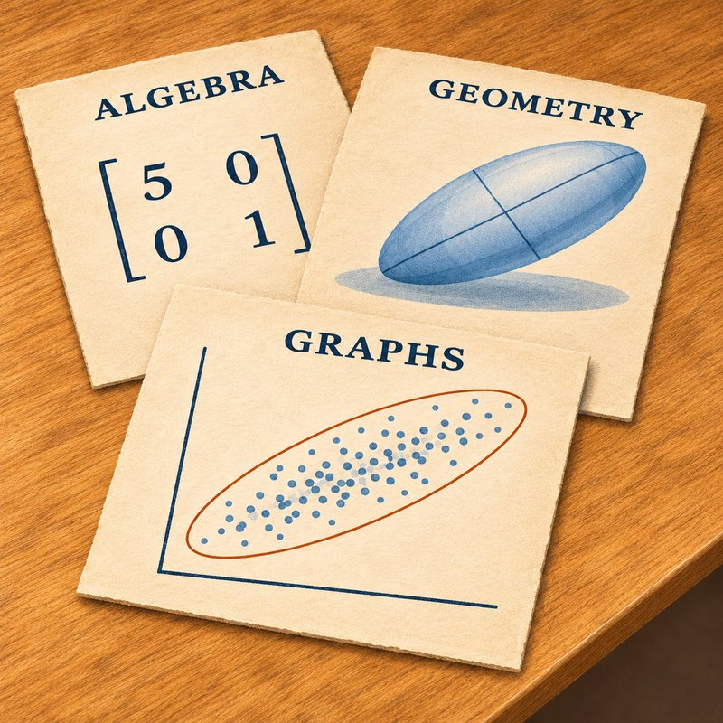
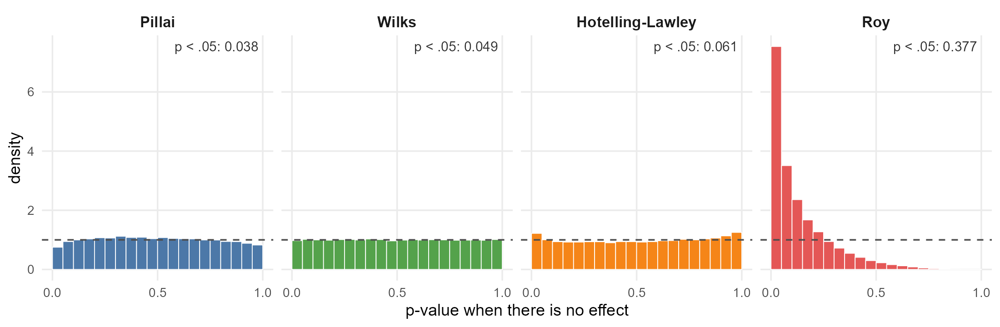

Reducing dimensions in multivariate linear models and in graphical methods: Stories from a fireside chat
Vis-MLM
multivariate linear models
graphics
HE plots
ellipses
Multivariate statistics climbs up a ladder of dimensions, from scalars to matrices. This post climbs back down. Every step asks the same question, ‘how big is it?’, and answering it means deciding what to compare against and what ‘big’ means.
Author
Michael Friendly
Published
November 26, 2026
A fireside chat on how big H is, relative to E. Left to right: Wilks, Hotelling, Pillai (holding the HE plot), Roy (pointing to the largest dimension of H), me, and Georges Monette. A copy of Dempster (1969) sits on the table. Coffee mugs suggest the Elemental Forces of their approaches.
Introduction
When we left A. Square, in my last post, On Extending lm() Methods to "mlm", the Sphere had just shown him what one more dimension looks like (Abbott 1884). Going from a univariate linear model to a multivariate one, every object the model produces gains a dimension: a residual becomes a vector, a coefficient vector a matrix, a variance a covariance matrix.
But earlier in the story, A. Square dreams of a trip the other way, to Lineland, whose King can’t conceive of anything but length. I used to feel a little sorry for the King. Then I noticed how much of multivariate statistics consists of working out, very carefully, how to get to Lineland. You start with a matrix of 130 numbers. You’d like to finish with one, and be able to say “that’s big”. (Pointland, whose only inhabitant is entirely pleased with himself, is there for the \(p\)-value.)
This post is about the trip back down. Each step down answers the same question, and the question turns out to be harder than it looks:
How big is my matrix? First say compared to what, and in what sense. Every summary is a shadow

Compared to what means choosing a metric: the identity, the error covariance, or the total. In what sense means choosing what counts as size: the total, the largest part, or the volume:
Algebra tells you how few numbers you need to keep to say “It’s THIS big!”
Geometry shows you what those numbers measure, and what was thrown away to get them.
And graphs or diagrams show you what this means, and how to understand it all.
It’s the interplay among these three Elemental Forces of Statistical Understanding that intrigues me in my work on graphical methods for data analysis, often on Un-Vizzed problems. That’s the subject of this article. The rubric that unites them is: To climb back down the ladder of dimensions of a problem,
decide what ‘big’ means,
keep what you need to measure it, and
draw a picture of what’s left.
My title comes from the scene in the banner. Imagine the people who invented the classical multivariate tests sitting around a fire with an HE plot, arguing about how big H is compared to E. Each one had a different, and perfectly reasonable, answer. By indirection, this post is also about what I learned from the process of trying to develop graphical methods for multivariate models in R with the help and inspiration of the gentlemen around the table.
Climbing back down
Here’s the whole trip in one picture, for the Pottery data used in the first post: the chemical composition (Al, Fe, Mg, Ca, Na) of 26 samples of Romano-British pottery from four kiln sites.
The first question is whether the sites differ. If they do, archaeologists like Tubb et al. (1980) would also want to know how they differ, and relate this to what they knew about the peoples who inhabited these sites.
Figure 1: Coming down the ladder for the Pottery MANOVA. Each step keeps fewer numbers. Each sets something aside, and concentrates the information in a better summary.
The 130 numbers in Y become two \(5 \times 5\) matrices, H for the differences among the site means and E for the variation within sites. These keep 15 distinct numbers each, and set aside the individual cases and the grand means.
H and E become \(s = 3\) eigenvalues, \(\lambda_i\), the nonzero roots of \(\mathbf{H}\mathbf{E}^{-1}\). These set aside the units of the responses and the directions of the effect.
The eigenvalues become one number, here Pillai’s trace, \(V\). This sets aside how the size of the effect is spread over the dimensions.
\(V\) becomes an effect size, \(\eta^2 = V / s = 0.52\), the proportion of the multivariate variation explained by the sites. Dividing by \(s\) sets aside how many dimensions there are, and puts the answer on a 0 to 1 scale that any reader can compare.
Every rung is still an answer to “how big?”. A \(p\)-value would be a different kind of answer: it sets aside the size itself and keeps only the evidence, so it doesn’t belong on this ladder.
Each step is a choice, and each choice is a reasonable answer to “how big?”. The rest of this post is about those choices, and about the pictures that show what each one keeps.
There’s a trade-off in coming down the ladder, and Hadley Wickham put it neatly. In a 2013 talk, as John D. Cook paraphrased it:
Visualization can surprise you, but it doesn’t scale well. Modeling scales well, but it can’t surprise you.
In R for Data Science Hadley and his co-authors give the reason (Wickham et al. 2023):
Visualizations can surprise you, but they don’t scale particularly well because they require a human to interpret them.
Models scale, but every model makes assumptions it can’t question, and so “a model cannot fundamentally surprise you.” Visualization of data and models require shared cognitive and perceptual assumptions between the graph designer or developer and the human viewer, whose understanding of some problem or phenomenon a graph is supposed to increase.
Every step down the ladder trades a little more surprise for a little more scale. A single number, like a \(p\)-value, scales to any number of tests, but it will never show you something you didn’t think to ask. That’s why I want to stop at each rung and look.
How big is a vector?
Start at the bottom, with a single vector. Its size is its length, and even that needs a choice.
Length and distance are the same question from this perspective. The length of \(\mathbf{y}\) is just its distance from \(\mathbf{0}\), and how far apart \(\mathbf{x}\) and \(\mathbf{y}\) are is just how big \(\mathbf{x} - \mathbf{y}\) is. (Center \(\mathbf{y}\) first, and its length is its distance from the mean.) There’s no shortage of answers. The animation in Figure 2, which went around social media recently, has nine; six of them are here.
Figure 2: Six ways to measure how far apart A and B are. Animation by @mathemetica (post on X, November 2026), cropped: its bottom row, for sets (Jaccard, Sørensen–Dice) and points on a globe (haversine), is left out.
Most of these are lengths of \(\mathbf{x} - \mathbf{y}\) in one sense or another. Euclidean, Manhattan and Chebyshev are three settings of a single dial, Minkowski’s exponent: watch its unit ball morph from a diamond, through a circle, toward a square, the three shapes in the left panel of Figure 3 below. Cosine sets length aside and keeps only the angle; center the two vectors first, and it’s their correlation. Hamming counts mismatches between bit strings, and the three left out are for sets and points on a globe.
What’s striking is the question none of these asks: compared to what? Every panel measures in fixed units, as if the axes were on the same scale and uncorrelated. Nine ways to say how far apart A and B are, and not one asks how far apart points usually are. Hold that thought for the last item below.
Figure 3: Left: three ways to measure length. The “unit circle”, the set of points of length 1, is a diamond for \(L_1\), a circle for \(L_2\) and a square for \(L_\infty\). Vector \(\mathbf{a}\) has Euclidean length 1, but \(L_1\) length 1.4 (the dashed city-block route) and \(L_\infty\) length 0.8 (its longer leg, shaded). Right: changing the metric. With correlated variables, the Mahalanobis unit circle is an ellipse, and two points at the same Euclidean distance can be very different distances away.
The familiar length is Euclidean, \(L_2\): \(\|\mathbf{y}\|^2 = \mathbf{y}^\top\mathbf{y}\). Centered, that’s the total sum of squares, and divided by its df, it’s the variance. A variance is a squared length.
Pythagoras splits it: \(SS_T = SS_H + SS_E\). The \(F\) ratio compares two squared lengths, each per df. So even the univariate test is already asking “how big is H, relative to E?”
Other lengths are useful too. \(L_1\) adds absolute values (city-block distance), and \(L_\infty\) takes the largest one.
The choice of length is also the difference between ridge regression and the lasso. Both shrink the least squares coefficients by limiting their size: ridge limits their \(L_2\) length, the lasso their \(L_1\) length. The estimate moves out from the origin until an RSS contour first touches the constraint region (Figure 4). The \(L_2\) disk is round, so that point almost never lies on an axis, and ridge shrinks every coefficient without setting any to zero. The \(L_1\) diamond has corners on the axes, and the contours tend to meet it there, so the lasso sets some coefficients exactly to zero: it selects variables as it shrinks.
Compared to what? With correlated variables, Euclidean distance is the wrong ruler. The Mahalanobis distance, \(\mathbf{e}^\top \mathbf{S}^{-1} \mathbf{e}\), measures length in the metric of the data, and its unit circle is the data ellipse. It’s the tenth metric that Figure 2 leaves out, and the only one whose unit ball comes from the data rather than from a choice of exponent. In the right panel of Figure 3, A and B are both 1 unit from the origin by Euclid, but B is more than twice as far as A in the metric of the ellipse.
Figure 4: Ridge regression and the lasso, for two correlated predictors. The red ellipses are contours of the residual sum of squares around the OLS estimate. Each method gives the first point where a contour touches its constraint region, here of the same size: the \(L_2\) disk for ridge, the \(L_1\) diamond for the lasso. The lasso lands on a corner, so \(\hat\beta_1 = 0\). Dashed curves trace each method’s solutions as the constraint shrinks.
How big is a covariance matrix?
One rung up, a covariance matrix \(\mathbf{S}\) for \(p\) variables holds \(p(p+1)/2\) different numbers: \(p\) variances and \(p(p-1)/2\) covariances. How big is that? There are two classic answers, each a single number.
The trace, \(\operatorname{tr}(\mathbf{S})\), adds up the variances: the total variance. It’s easy to compute and to explain, but it ignores the covariances entirely.
The determinant, \(|\mathbf{S}|\), is what Wilks (1932) called the generalized variance. It takes the correlations into account, and it has a lovely geometric meaning.
For any \(2 \times 2\) matrix, the determinant is the area of the parallelogram spanned by its rows (left panel of Figure 5); for a \(3 \times 3\) matrix it’s the volume of a parallelepiped, and so on up (Hannah 1996; Locke 1994). Area is the natural size of a flat thing, so it’s a natural candidate for the size of a matrix.
For a covariance matrix, the better picture is the data ellipse, \(\mathbf{x}^\top \mathbf{S}^{-1} \mathbf{x} = 1\). Its semi-axes point along the eigenvectors of \(\mathbf{S}\) and have lengths \(\sqrt{\lambda_1}, \sqrt{\lambda_2}, \dots\), the square roots of its eigenvalues. Then the two sizes are two ways of combining the same axes:
and the area of the ellipse is \(\pi \sqrt{|\mathbf{S}|}\) (in \(p\) dimensions, its volume is proportional to \(\sqrt{|\mathbf{S}|}\)).
Figure 5: Left: the determinant of \(\mathbf{A}\) is the area of the parallelogram spanned by its rows, \(\mathbf{a}_1\) and \(\mathbf{a}_2\). Right: data ellipses for two variables with unit variances and correlation \(r\) = 0, 0.75 and 0.95. All three have the same trace, 2, but \(|\mathbf{S}| = 1 - r^2\) shrinks, and so does the area. Arrows show the semi-axes of the \(r = 0.75\) ellipse, whose lengths are the square roots of the eigenvalues of \(\mathbf{S}\).
The right panel shows why the two answers differ. All three ellipses have the same variances, so the trace can’t tell them apart. But as the correlation grows, the ellipse is squeezed along its minor axis, and the generalized variance, \(1 - r^2\) here, falls toward zero. Correlated variables carry less information than their variances suggest, and the determinant is the size that notices.
At \(r = 1\) the ellipse collapses to a line: no area, \(|\mathbf{S}| = 0\). The data have dropped into Lineland, and \(\mathbf{S}\) has no inverse. That’s why the Mahalanobis distance in the last section needs \(|\mathbf{S}| \neq 0\). When it exists, the inverse has \(|\mathbf{S}^{-1}| = 1 / |\mathbf{S}|\), and its ellipse has the same axes with reciprocal lengths, so the long axis becomes the short one (geometric diagrams).
The determinant will be back. Wilks’s \(\Lambda\), one of the four MANOVA tests below, is a ratio of two of them, \(|\mathbf{E}| / |\mathbf{H} + \mathbf{E}|\): the squared ratio of two areas.
How big is a matrix of data?
A covariance matrix is already a summary. Go back to the data themselves: an \(n \times p\) matrix \(\mathbf{Y}\), centered at the column means. The tool for sizing up any rectangular matrix is its singular value decomposition,
\(\mathbf{V}\) and \(\mathbf{U}\) are rotations, which don’t change size at all, so everything about how big \(\mathbf{Y}\) is lives in the singular values \(d_i\). They are the semi-axes of the data ellipsoid, up to a constant: the eigenvalues of the covariance matrix are \(\lambda_i = d_i^2 / (n-1)\). So the sizes of the last section come back, now as different ways of combining the \(d_i\):
Table 1: Three sizes of a data matrix, up to the factor \(n - 1\).
“Size” of \(\mathbf{Y}\)
In singular values
For the data ellipsoid
Statistical name
Frobenius norm, squared
\(\sum d_i^2\)
sum of squared semi-axes
total variance (trace)
Spectral norm, squared
\(d_1^2\)
longest semi-axis, squared
variance of the first PC
Determinant of \(\mathbf{Y}^\top\mathbf{Y}\) (not a norm)
\(\prod d_i^2\)
volume, squared
generalized variance
Here they are for the five oxides in the Pottery data. The oxides are measured in very different amounts (Al varies about a thousand times as much as Ca or Na), so I standardize them first. That is the compared to what? question again: in raw units, aluminum alone would decide how big the matrix is.
Show the code
data(Pottery, package ="carData")Z <-scale(Pottery[, -1]) # the five oxides, standardizedd <-svd(Z)$dround(d, 3)
[1] 9.846 3.901 2.471 2.150 1.452
Show the code
c(Frobenius2 =sum(d^2), spectral2 = d[1]^2, det =prod(d^2))
Frobenius2 spectral2 det
125.00000 96.94492 87748.90008
Show the code
round(cumsum(d^2) /sum(d^2), 3) # proportion of total variance, first k
[1] 0.776 0.897 0.946 0.983 1.000
After standardizing, the Frobenius size is just \((n-1)p\) = 125, and tells us nothing: every standardized matrix of this shape has the same total variance. The information is in how that total is spread over the \(d_i\), and that’s where the other sizes come in (Figure 6).
Figure 6: Same total, different spread. The eigenvalues of three \(5 \times 5\) correlation matrices (the \(d_i^2 / (n-1)\) of standardized data) all add up to 5. The largest, the product and the condition number tell them apart, and each picks a different one as “biggest”. Pottery has one big dimension; the made-up collinear data have four ordinary ones and one that is nearly missing.
Keep the big ones: PCA. The first \(k\) singular values and vectors give the best rank-\(k\) approximation to \(\mathbf{Y}\), in both the Frobenius and the spectral norm (Eckart and Young 1936). What’s left over has squared Frobenius size \(\sum_{i > k} d_i^2\), so the proportion of variance kept is \(\sum_{i \le k} d_i^2 / \sum d_i^2\). For Pottery, two dimensions keep 89.7%. This is principal components analysis, and the biplot draws the observations and the variables together in that low-rank space (Gabriel 1971).
Watch the small ones: collinearity. For a matrix of predictors\(\mathbf{X}\), the small end of the spectrum is where the trouble is. A \(d_i\) near zero means the ellipsoid is nearly flat in some direction, so \(|\mathbf{X}^\top\mathbf{X}|\) is nearly zero and some coefficients are badly determined. The condition number\(d_1 / d_p\) measures how flat; for the standardized oxides it’s 6.78, no cause for alarm.
Shrink the small ones: ridge regression. Ridge regression (Hoerl and Kennard 1970) shrinks the least squares fit along each principal axis of \(\mathbf{X}\) by the factor \(d_i^2 / (d_i^2 + k)\), for ridge constant \(k\). Big directions are hardly touched; the small, poorly determined ones are shrunk the most. Adding up the factors, \(\sum d_i^2 / (d_i^2 + k)\), gives the effective degrees of freedom of the fit: a whole matrix, reduced to one number that says how big the model is (Friendly 2013). Keep that form in mind. Pillai’s trace, one of the four MANOVA tests below, is \(\sum \lambda_i / (1 + \lambda_i)\), the same kind of sum.
Ellipses have shadows
Georges Monette has a short way of putting one of the most useful ideas in this business: ellipses have shadows. Shine a light on an ellipse, and its shadow on a line is an interval. That is a step down from two dimensions to one, and the ellipse holds every such step at once: for any linear combination of the parameters, the confidence interval is the shadow of the confidence ellipse on that direction (Monette 1990; Friendly et al. 2013).
This helps you to think constructively about univariate tests in relation to joint tests of parameters and ideas like Scheffé tests accounting for multiplicity. But it goes further, because 3D (and higher-D) ellipsoids also have their 2D shadows, whose properties are illuminating.1 Those are harder to draw, however.
Here’s the example from our ellipses paper (Fig. 13 there), with contrived data on 20 university people: an index of heart damage, predicted from their coffee consumption and their occupational stress. Coffee and stress are strongly correlated, so the confidence ellipse for the two slopes is long and thin.
Figure 7: The confidence ellipse for \((\beta_\text{Coffee}, \beta_\text{Stress})\) and some of its shadows. Left: shadows on the axes give the usual confidence intervals (orange), from the 95% CI ellipse, and the Scheffé intervals (grey), from the larger joint ellipse. Right: shadows in other directions give the slope for Coffee ignoring Stress, and the difference between the two slopes.
The shadows tell the whole story of this regression:
Straight down, on the \(\beta_\text{Coffee}\) axis, the shadow is the 95% confidence interval for Coffee, controlling for Stress. It includes 0. Straight across, the interval for Stress excludes 0. Once you know a person’s stress, coffee adds nothing.
Along the tilt of the ellipse, onto the line \(\beta_\text{Stress} = 0\), the shadow lands on the slope for Coffee in the simple regression, ignoring Stress. That slope is positive and clearly not zero. The apparent paradox, that coffee “matters” in one model and not the other, is just two shadows of the same ellipse, cast from two directions.
On a diagonal axis, the shadow gives an interval for \(\beta_\text{Stress} - \beta_\text{Coffee}\), which excludes 0: the two slopes differ.
The size of the ellipse depends on how many questions you want to ask of it. Scaled by \(t_{\nu}\), its shadows are ordinary 95% intervals, good for one question at a time. Scaled by \(\sqrt{2 F_{2,\nu}}\), it becomes the joint 95% confidence region, and its shadows are Scheffé intervals, which hold simultaneously for every direction you might look. That’s the price of going fishing, paid in advance.
So an ellipse is a remarkably economical summary. It stores every one-dimensional answer, and you choose which one you want by choosing where the light comes from. That idea comes back below, as Roy’s largest root: the direction in which H casts its longest shadow relative to E.
How big is H, relative to E?
With one response, this question is easy, because H and E are just numbers: the sums of squares for the hypothesis and for error. “How big is \(SS_H\) relative to \(SS_E\)?” is answered by dividing, \[\lambda = \frac{SS_H}{SS_E}, \qquad F = \lambda \cdot \frac{df_e}{df_h} .\] The \(F\) statistic is just this ratio, put on a scale where its distribution is known.
Take the smallest multivariate example I know, the mathscore data from heplots, which I used to introduce Hotelling’s \(T^2\) in the book (Friendly 2024). Two groups of six students, taught by different instructors, have scores on basic math (BM) and word problems (WP). One response at a time:
Response
\(SS_H / SS_E\)
\(F(1, 10)\)
\(p\)
BM
0.42
4.24
0.066
WP
1.05
10.45
0.009
So the groups differ on word problems, but not quite on basic math. Keep those two numbers in mind.
With both responses, H and E are \(2 \times 2\) matrices, and you can’t divide one matrix by another. The product \(\mathbf{H}\mathbf{E}^{-1}\) exists, but its entries don’t mean much on their own. The way out is to change the units (Figure 8):
Figure 8: How big is H relative to E, for the mathscore data. (A) In the units of the data, E (red) is the within-group covariance ellipse, and H (blue) is a line, because two groups can differ in only one direction. (B) Re-expressed in units of E, the error ellipse becomes the unit circle, and H becomes H*. (C) Rotated to the axes of H*, all that’s left is how far H* sticks out beyond the circle: \(\sqrt{\lambda_1}\).
Measure in units of E. Transform the responses so that the error ellipse becomes a circle of radius 1: \[\mathbf{H}^\star = \mathbf{E}^{-1/2}\,\mathbf{H}\,\mathbf{E}^{-1/2}, \qquad \mathbf{E}^\star = \mathbf{I} .\] Now every direction has the same error variance, and H* says how big the effect is in each direction, in units of error. This is the matrix version of dividing by \(SS_E\), and the same change of metric that turns Euclidean distance into Mahalanobis distance.
Rotate to the axes of H*. A circle looks the same after any rotation, so turn the picture until H* lines up with the axes. All that’s left are the lengths of its axes: the eigenvalues \(\lambda_1 \ge \lambda_2 \ge \dots\) of \(\mathbf{H}\mathbf{E}^{-1}\). Only \(s = \min(q, df_h)\) of them can be nonzero. Here there are two responses but only one degree of freedom between two groups, so \(s = 1\): H is a line, and \(\lambda_1 = 6.42\), \(\lambda_2 = 0\).
Now compare. Basic math alone gave 0.42, and word problems alone 1.05. Both responses together give 6.42, six times the better of the two. The reason is in panel A: within groups, BM and WP go up together (the red ellipse tilts up), but the group means differ in opposite directions (the blue line tilts down). The groups are best told apart by a contrast, roughly BM minus WP, and along that direction the difference is huge relative to error.
This is where shadows come back, and they tie the matrix answer to the univariate one. Pick any weighted combination of the responses, \(y = a_1 \text{BM} + a_2 \text{WP}\). Its sums of squares are the squared shadows of the two ellipses in the direction \(\mathbf{a}\): \[SS_H(y) = \mathbf{a}^\top \mathbf{H}\, \mathbf{a}, \qquad SS_E(y) = \mathbf{a}^\top \mathbf{E}\, \mathbf{a} .\] So the ratio of the shadows, squared, is the ordinary univariate \(\lambda\) for that one variable, a ratio of variances. Shine the light straight down the BM axis and you get 0.42; straight across, along WP, 1.05. Turn the light, and the ratio changes. Its largest value, over every direction you could choose, is \(\lambda_1 = 6.42\), and the direction that gives it is the best combination of the responses. So the multivariate answer is the univariate answer, for the best variable you could have measured. The axes, BM and WP, are just two of the directions, and here not good ones. As a test, \(F = 28.9\) on 2 and 9 df, \(p = 0.0001\).
Why the eigenvalues are enough. A sensible answer to “how big?” shouldn’t depend on the units of the responses (points or percent), or on which combinations of them you choose to analyze (BM and WP, or their sum and difference). Any such change transforms H and E together, and leaves the \(\lambda\)s unchanged. So any test that ignores these arbitrary choices can depend on the data only through the \(\lambda\)s. That’s how a matrix question becomes a question about \(s\) numbers: invariance does the reducing.
What’s set aside. The directions. The \(\lambda\)s say how big, but not which way. Here the direction is the contrast between BM and WP, given by the eigenvector of \(\mathbf{E}^{-1}\mathbf{H}\), the weights of the linear discriminant function. Getting the directions back, and showing them, is the job of HE plots and canonical plots (below).
With \(s = 1\) there’s one number, and nothing more to decide: Pillai, Wilks, Hotelling-Lawley and Roy all give the same \(F\). The Pottery data have \(s = 3\) eigenvalues, 34.16, 1.25 and 0.028 (Figure 1), and that’s where the four tests part company.
Four kinds of mean
For the Pottery data there are three eigenvalues, \(\lambda\) = 34.16, 1.25 and 0.028: one big dimension of difference among the kiln sites, one modest, and one that is essentially noise. To get to one number, you have to combine them somehow. The four classical tests are four ways to do it, and the cleanest way to see how they differ is to notice that each one is an average, of a different kind.
Re-express each eigenvalue as the share of error in its dimension, \[u_i = \frac{1}{1 + \lambda_i} = 1 - r_i^2 ,\] where \(r_i^2 = \lambda_i / (1 + \lambda_i)\) is the squared canonical correlation for that dimension. A big effect means a small \(u_i\). Then each test statistic is a mean of the same \(s\) numbers \(u_1, \dots, u_s\), and one minus that mean is a multivariate \(\eta^2\):
Test
Statistic
Mean of the \(u_i\)
\(\eta^2\) for Pottery
Pillai
\(V = \sum \lambda_i / (1 + \lambda_i)\)
arithmetic: \(1 - V/s\)
0.518
Wilks
\(\Lambda = \prod 1 / (1 + \lambda_i)\)
geometric: \(\Lambda^{1/s}\)
0.769
Hotelling-Lawley
\(U = \sum \lambda_i\)
harmonic: \(s / (s + U)\)
0.922
Roy
\(R = \lambda_1\)
minimum: \(1 / (1 + R)\)
0.972
These four means are an old family, the power means of order 1, 0, −1 and \(-\infty\), and they always come in the same order: arithmetic \(\ge\) geometric \(\ge\) harmonic \(\ge\) minimum. So for any data, \[\eta^2_\text{Pillai} \le \eta^2_\text{Wilks} \le \eta^2_\text{HL} \le \eta^2_\text{Roy},\] with equality only when all the \(\lambda_i\) are equal, or when there’s just one of them, as in mathscore. For Pottery, the same three numbers give effect sizes from about half to almost all. None of them is wrong. They answer “how big?” in different senses.
What counts as big. The difference shows most clearly with two effects that have the same Hotelling-Lawley trace:
\(\lambda\)
Pillai \(V\)
Wilks \(\Lambda\)
HL \(U\)
Roy \(R\)
(1, 0), concentrated
0.50
0.50
1
1.0
(0.5, 0.5), diffuse
0.67
0.44
1
0.5
Pillai and Wilks say the diffuse effect is bigger (larger \(V\), smaller \(\Lambda\)). Roy says the concentrated one is, because he looks only at the largest root. Hotelling-Lawley can’t tell them apart. Figure 9 shows why: each curve is the set of effects that one test calls equally big.
Figure 9: What each test counts as “big”, for \(s = 2\). Each curve joins the pairs \((\lambda_1, \lambda_2)\) that one test rates the same as the concentrated effect (1, 0). Effects outside a curve are bigger by that test’s lights. The diffuse effect (0.5, 0.5) is outside the Pillai and Wilks curves, on the Hotelling-Lawley line, and inside Roy’s square.
The shapes should look familiar from Figure 3. The Hotelling-Lawley contour is a diamond, the unit ball of the \(L_1\) norm: it simply adds up the \(\lambda\)s. Roy’s is a square, the \(L_\infty\) ball: only the largest counts. Pillai and Wilks bend in further than the diamond, so they give extra credit for spreading an effect over several dimensions. Choosing a test is choosing a norm.
This is also why the tests differ in power. Roy’s test is the most powerful when the group differences are concentrated in one dimension, and Pillai’s when they are spread over several (Schatzoff 1966). Pillai’s is also the most robust to violations of the assumptions, which is why Olson (1974) recommended it as the default, and why car::Anova() reports it first.
With Pottery’s roots, one big and two small, Roy has the easiest call to make.
Figure 10: Wilks, Pillai, Hotelling-Lawley and Roy walk into a bar. Asked “Is something going on here?”, the first three, averaging over all the \(\lambda\)s on their napkin, say “Probably.” Roy points at the largest one: “HIM!”
Four rulers for one ellipse
The four means have a picture, and it’s the one we already have. Go back to panel C of Figure 8: measured in units of E, the error ellipse is the unit circle, and the effect sticks out beyond it. It’s easiest to read if you draw H + E, the total, rather than H alone. With E a circle and the axes turned to line up with the effect, H + E is an ellipse with semi-axes \[a = \sqrt{1 + \lambda_1}, \qquad b = \sqrt{1 + \lambda_2} .\] The more the ellipse sticks out beyond the circle, the bigger the effect. But “how much it sticks out” can be measured in more than one way, and each test uses a different ruler (Friendly et al. 2013, fig. 19):
Figure 11: Four rulers for one ellipse. In units of E (grey circle), H + E is the orange ellipse, here for \(\lambda = (3, 1)\). Each test measures it differently: Roy the longest semi-axis \(a\), Wilks the area, Hotelling-Lawley the diagonal \(c\) from the end of one axis to the end of the other, and Pillai the perpendicular \(d\) from the center to that diagonal.
Test
Ruler
Relation, for \(q = 2\)
Which mean
Roy
the longest semi-axis, \(a\)
\(R = a^2 - 1\)
minimum
Wilks
the area, \(\pi a b\)
\(\Lambda = 1 / (ab)^2\)
geometric
Hotelling-Lawley
the diagonal, \(c = \sqrt{a^2 + b^2}\)
\(U = c^2 - 2\)
harmonic
Pillai
the perpendicular to it, \(d = ab / c\)
\(V = 2 - 1/d^2\)
arithmetic
The rulers line up with the means of the previous section, because \(1/a^2\) and \(1/b^2\) are just the \(u_i\), the shares of error. Roy reads only the longest axis, so he takes the smallest \(u_i\). Wilks multiplies the two axes, so he takes their geometric mean. Hotelling-Lawley adds the squared axes, \(a^2 + b^2\), and Pillai adds their reciprocals, \(1/a^2 + 1/b^2 = 1/d^2\): sums of the \(\lambda\)s and of the \(u_i\)s.
And here the shadows come back once more. Every shadow of the unit circle has the same length, 1, so the shadow of H + E in any direction measures the effect in that direction, relative to error. Shadows of this ellipse range from \(b\) to \(a\):
Roy asks for the longest shadow, \(a\). That’s the direction of the largest root, and the best single combination of the responses, as with mathscore. It’s also why Roy’s test is the natural one for Scheffé-style protection over all combinations.
Hotelling-Lawley doesn’t care which way you look. Cast the ellipse’s shadows on any two perpendicular directions, and the squares of their lengths add up to the same \(a^2 + b^2\). No rotation needed: the total is the same however the axes are turned.
Pillai does the same with the reciprocals, which weight the short shadows most. A dimension where the effect is small pulls Pillai down more than it pulls the others.
Wilks measures the whole ellipse at once, as an area (a volume, for \(q > 2\)): a generalized variance, as in the determinant section.
For the toy roots in Figure 11, the four \(\eta^2\)s are 0.625 (Pillai), 0.65 (Wilks), 0.67 (Hotelling-Lawley) and 0.75 (Roy), in the order the previous section promised. They are close here because the two roots, 3 and 1, are not very different. For Pottery, where they are (34.16, 1.25, 0.028), the four rulers give very different answers.
All roads lead to F
Four tests, four kinds of mean, four rulers: each statistic also has its own sampling distribution, which depends on \(s\) and on the numbers of responses and degrees of freedom. When I learned this, testing a MANOVA meant looking up Wilks’ \(\Lambda\) in special tables, or reading Roy’s largest root off Heck’s charts. Today nobody does, because each statistic can be converted to an \(F\), and car::Anova() reports them all that way. All roads lead to \(F\).
The conversions are not all equally good:
Pillai
Wilks
Hotelling-Lawley
Roy
\(s = 1\)
exact
exact
exact
exact
\(s = 2\)
approximate
exact
approximate
upper bound
\(s \ge 3\)
approximate
approximate
approximate
upper bound
With \(s = 1\) there is only one \(\lambda\), so there is nothing to average, and the four tests are the same test. For mathscore, car::Anova() prints \(F = 28.88\) on 2 and 9 df four times over. Hotelling’s \(T^2\) is this case, and so is every 1-df term in a MANOVA or multivariate regression. For Wilks with \(s = 2\) the \(F\) is exact, by way of \(\sqrt{\Lambda}\); otherwise it is Rao’s approximation, which is very good. Pillai and Hotelling-Lawley use approximations too.
Roy is the odd one out. His statistic is the largest root, and the \(F\) that R reports treats it as if it were the only one. That gives an upper bound on the true \(F\), so the \(p\)-value is too small whenever \(s > 1\). How much too small? I simulated 100,000 data sets with no effect at all, in a design the size of Pottery: five responses, four groups, 26 cases. If a test is doing its job, its \(p\)-values should then be spread evenly between 0 and 1, and about 5% should fall below .05 (Figure 12).
\(q\)
\(df_h\)
\(df_e\)
s
Pillai
Wilks
Hotelling-Lawley
Roy
5
1
20
1
0.051
0.051
0.051
0.051
2
2
20
2
0.043
0.050
0.054
0.163
5
2
20
2
0.041
0.050
0.057
0.181
5
3
22
3
0.038
0.049
0.061
0.377

Figure 12: The distribution of \(p\)-values for the four tests when there is no effect, in a design the size of Pottery (\(q = 5\), \(df_h = 3\), \(df_e = 22\), so \(s = 3\)), from 100,000 simulated data sets. A test that keeps its promise has a flat histogram (dashed line), with 5% of \(p\)-values below .05.
Wilks is right on target. Pillai is a little conservative and Hotelling-Lawley a little liberal, neither by enough to matter much. Roy’s test, with nothing there at all, says “significant” 38% of the time. That’s what “upper bound” means in practice: when \(s > 1\), treat Roy’s \(p\)-value as a lower limit, not as a \(p\)-value.2
There’s one more trap in the common currency. Because each road to \(F\) starts somewhere different, \(F\)s from different tests can’t be compared as sizes. For Pottery, the same three eigenvalues give
Test
\(F\)
df
\(p\)
Pillai
4.30
15, 60
\(2.4 \times 10^{-5}\)
Wilks
13.09
15, 50.1
\(1.8 \times 10^{-12}\)
Hotelling-Lawley
39.38
15, 50
\(< 2.2 \times 10^{-16}\)
Roy
136.64
5, 20
\(9.4 \times 10^{-15}\)
All four say the kiln sites differ, which is the question a test answers. But the \(F\)s run from 4 to 137, and none of them is a measure of how much. For that, go back up a rung, to the \(\lambda\)s and the four \(\eta^2\)s.
Don’t reduce too soon: HE plots
The last section ended on a complaint: four tests, four \(F\)s running from 4 to 137, and none of them says how much. Going back up a rung, to the \(\lambda\)s and the \(\eta^2\)s, gets how much back. Going up one more, to H and E themselves, gets back what the \(\lambda\)s set aside: the directions. That’s what an HE plot shows. It answers the same question as a test, “how big is H relative to E?”, but it stops in two dimensions instead of one, and leaves the last step of reading to you.
The recipe uses only ideas from above:
Center both ellipsoids at the grand mean, so they share one frame, and the group means can go in it too.
Scale both by \(df_e\). E is then the covariance ellipse of the residuals, and H is in the same units. This is effect scaling, and it answers “how big?”.
Or rescale H for significance (evidence) scaling, which answers “big enough?”. By default, heplots scales H so that it sticks out beyond E in some direction exactly when Roy’s test is significant. With \(s > 1\) that’s the upper bound of the last section, so when H barely pokes out, check Pillai or Wilks before believing it.
Figure 13 is a reading of the Pottery data, the way Figure 8 reads mathscore.
Figure 13: Pottery, read the way Figure 8 read mathscore, with effect scaling (H and E divided by \(df_e\)). (A) Data space for Al and Fe: the shadows of the five-dimensional E (red) and H (blue) ellipsoids on that plane, with the cases (grey) and site means. (C) Canonical space, the first post’s canonical plot in effect units: E is the unit circle, and H lies on the axes, with semi-axes \(\sqrt{\lambda_1}\) and \(\sqrt{\lambda_2}\). Grey arrows show the correlations of the oxides with Can1 and Can2.
Panel A is an ordinary HE plot, for Al and Fe, the two oxides that matter most to the first canonical dimension. It’s also a shadow: the two-dimensional projection of five-dimensional ellipsoids, and another pair of oxides would cast a different one. Even so, it shows something no test statistic can. H is long and thin, and it runs acrossE, not along it. The sites differ mostly in one direction, aluminum against iron, and that’s a direction in which pots from the same site hardly vary.
Panel C turns to the best shadow. It’s the canonical plot from the first post, redrawn in effect units, and it’s panel C of Figure 8 with real data: E is the unit circle, and H lies along the axes, with semi-axes \(\sqrt{\lambda_1} = 5.84\) and \(\sqrt{\lambda_2} = 1.12\). (The third, 0.17, is in a dimension we can’t see here, well inside the circle.) Now the disagreements of the last two sections are out in the open:
The effect is concentrated.H sticks far out of the circle in one direction, barely in a second, and hardly at all in a third. That’s the concentrated point in Figure 9, which Roy’s square corner counts as biggest and Pillai’s bowed curve as smallest, and it’s why the \(\eta^2\)s run from .52 (Pillai) to .97 (Roy).
Which way, and for whom. The arrows give the directions back. Can1 is aluminum against iron, magnesium and calcium, with Ashley Rails and Isle Thorns at one end and Llanedyrn and Caldicot at the other. The small second dimension separates Caldicot from Llanedyrn: a little more calcium, and a fifth of the sodium. None of the four statistics knows any of this.
Not the biggest variance. The canonical axes aren’t the principal axes of the data matrix. For the same five standardized oxides, the first principal component holds 78% of the total variance; Can1 holds 96% of the effect. PCA finds the biggest shadow of the data, and candisc the biggest shadow of H relative to E. That’s the sense in which the canonical plot is a biplot: of the effect, in the metric of error.
This is Wickham’s trade-off again. The test scales: it handles any number of responses and returns one number, ready for a table. The plot doesn’t scale as well, since it’s a shadow in two dimensions and needs a person to read it. But it’s where the surprises are: the shape of H, the direction it points, and which sites are doing the differing. Reduce, by all means, but not before you’ve looked.
Smaller R objects, too
The ladder works for the objects R hands back, too. In the first post, going from lm to mlm gave every object an extra dimension. Some of that size is real, and some is just bookkeeping. Knowing the structure tells you which numbers you don’t need to store.
The plainest case is vcov(). For Pottery there are five responses and four coefficients for each, so the covariance matrix of the coefficients is \(20 \times 20\): 400 numbers, 210 of them distinct. But the first post gave its structure, \(\textrm{Var}(\textrm{vec}\, \widehat{\mathbf{B}}) = \boldsymbol{\Sigma} \otimes (\mathbf{X}^\top \mathbf{X})^{-1}\), so all of it is made from two small matrices, with 15 and 10 distinct numbers:
Show the code
pottery.mlm <-lm(cbind(Al, Fe, Mg, Ca, Na) ~ Site, data = Pottery)V <-vcov(pottery.mlm)dim(V)
[1] 20 20
Show the code
S <-estVar(pottery.mlm) # Sigma-hat, 5 x 5XtXinv <-chol2inv(qr.R(pottery.mlm$qr)) # (X'X)^{-1}, 4 x 4all.equal(V, kronecker(S, XtXinv), check.attributes =FALSE)
[1] TRUE
The same thing happens elsewhere in the first post:
Table 2: What an mlm object needs to keep.
Object
Stored in full
Enough to rebuild it
vcov(), Pottery
\(20 \times 20\): 210 distinct numbers
\(\widehat{\boldsymbol{\Sigma}}\) and \((\mathbf{X}^\top\mathbf{X})^{-1}\): 15 + 10
\(n\) leverages \(h_i\) and one \(\widehat{\boldsymbol{\Sigma}}\): 26 + 15
ridge covariances, \(L\) values of \(\lambda\)
\(L\) matrices, each \(pq \times pq\)
one \(\widehat{\boldsymbol{\Sigma}}\) and \(L\) matrices \(\mathbf{V}_\lambda\), each \(p \times p\)
influence of all subsets of \(m\) cases
two \(m \times m\) matrices for each subset
one number for each: their det() or tr()
The first three rows lose nothing. The full object is a Kronecker or scalar multiple of smaller ones, and a method can rebuild it whenever it’s asked for. genridge already works this way. An "mlmridge" object keeps one \(3 \times 3\)\(\widehat{\boldsymbol{\Sigma}}\) and a \(5 \times 5\)\(\mathbf{V}_\lambda\) for each \(\lambda\), and its vcov() method expands them into \(15 \times 15\) matrices only on request.
The last row is different in kind. Reducing an \(m \times m\) matrix to its determinant or trace throws something away, and which one you choose is a choice of “how big?”, just as in the sections above. That’s why mvinfluence makes FUN an argument instead of deciding for you.
So, a design rule: store the factors, and let the methods expand or reduce them. Expanding is just arithmetic. Reducing is a choice, so leave it to the user.
This may also answer the question the first post left open: what should predict() return for an mlm? Not an array of intervals, one response at a time, but the fitted values, a leverage \(h_i\) for each case and one \(\widehat{\boldsymbol{\Sigma}}\). The confidence ellipse for case \(i\) is centered at \(\widehat{\mathbf{y}}_i\) with shape \(h_i \widehat{\boldsymbol{\Sigma}}\) (for a prediction interval, \((1 + h_i)\widehat{\boldsymbol{\Sigma}}\)), so a plot() method can draw any of them, and an intervals method can take their shadows on the axes. For Pottery, a one-way design, \(h_i\) is just \(1/n_j\) for the site a pot comes from, and the ellipse for each site mean is \(\widehat{\boldsymbol{\Sigma}}\) shrunk by its sample size.
Conclusion
A. Square went up a dimension, and saw more: 3D objects whose visions suggested a wider view of what Flatland society could become. This post has been about the trip the other way, from the 130 numbers in the Pottery data down to one, and about what each step leaves behind, when we focus on “How big?” a statistical object really is.
The same question came up at every rung, and it never had just one answer. The size of a vector depends on the norm you choose. The size of a covariance matrix depends on whether you take its trace, its largest eigenvalue or its determinant. The size of H depends on whether you measure it against the identity or against E. And once H is measured in units of E, there are still four reasonable ways to turn its eigenvalues into one number.
Around the fire in the banner image, Wilks, Pillai, Hotelling-Lawley and Roy aren’t arguing about arithmetic. They’re giving different answers to the precept’s two questions: compared to what?, and in what sense?. Nobody wins the argument, and that’s as it should be.
That’s why the precept’s motto is every summary is a shadow. A confidence interval is the shadow of an ellipse on one axis. Roy’s largest root is the longest shadow of H in units of E. An HE plot is the shadow of two ellipsoids on a plane, and the canonical plot is the best such plane. A shadow is a fine thing to look at, as long as you remember where the light comes from and what it can’t show.
The first post warned about methods that quietly turn one multivariate question into \(q\) univariate answers. The opposite mistake is just as easy: to return one multivariate answer and forget what was averaged to get it. A Pillai trace of 1.55, or an \(\eta^2\) of .52, is a good answer to “how big?”. It’s no answer at all to “in which direction?” or “which pottery sites differ, and how?”.
Back to the three Elemental Forces. Algebra told us how few numbers we need to keep: three eigenvalues, or a leverage and a \(\boldsymbol{\Sigma}\) in place of an array. Geometry showed what those numbers measure: semi-axes, areas, shadows. And graphs showed what was set aside on the way down. So climb down the ladder one rung at a time, and at each one:
decide what ‘big’ means,
keep what you need to measure it, and
draw a picture of what’s left.
The King of Lineland knew only one kind of size. We have many, and choosing among them is the work.
NoteTo cite this article
Friendly, M. (2026, November). How Big Is My Matrix? Reducing dimensions in multivariate linear models and in graphical methods: Stories from a fireside chat. Michael Friendly’s blog. https://friendly.github.io/blog/posts/2026-11-How-big/
@Misc{Friendly:2026:HowBig,author = {Friendly, Michael},title = {How Big Is My Matrix? Reducing dimensions in multivariate linear models and in graphical methods: Stories from a fireside chat},year = {2026},month = nov,howpublished = {Blog post},url = {https://friendly.github.io/blog/posts/2026-11-How-big/},}
References
Abbott, Edwin A. 1884. Flatland: A Romance of Many Dimensions. Buccaneer Books.
Dempster, A. P. 1969. Elements of Continuous Multivariate Analysis. Addison-Wesley.
Eckart, Carl, and Gale Young. 1936. “The Approximation of One Matrix by Another of Lower Rank.”Psychometrika 1 (3): 211–18. https://doi.org/10.1007/BF02288367.
Friendly, Michael. 2013. “The Generalized Ridge Trace Plot: Visualizing Bias and Precision.”Journal of Computational and Graphical Statistics 22 (1): 50–68. https://doi.org/10.1080/10618600.2012.681237.
Friendly, Michael, Georges Monette, and John Fox. 2013. “Elliptical Insights: Understanding Statistical Methods Through Elliptical Geometry.”Statistical Science 28 (1): 1–39. https://doi.org/10.1214/12-STS402.
Gabriel, K. R. 1971. “The Biplot Graphic Display of Matrices with Application to Principal Components Analysis.”Biometrika 58 (3): 453–67. https://doi.org/10.1093/biomet/58.3.453.
Hoerl, Arthur E., and Robert W. Kennard. 1970. “Ridge Regression: Biased Estimation for Nonorthogonal Problems.”Technometrics 12 (1): 55–67. https://doi.org/10.1080/00401706.1970.10488634.
Monette, Georges. 1990. “Geometry of Multiple Regression and Interactive 3-D Graphics.” Chap. 5 in Modern Methods of Data Analysis, edited by J. Fox and S. Long. SAGE Publications.
Olson, Chester L. 1974. “Comparative Robustness of Six Tests in Multivariate Analysis of Variance.”Journal of the American Statistical Association 69 (348): 894–908. https://doi.org/10.1080/01621459.1974.10480224.
Schatzoff, Martin. 1966. “Sensitivity Comparisons Among Tests of the General Linear Hypothesis.”Journal of the American Statistical Association 61 (314): 415–35. https://doi.org/10.1080/01621459.1966.10480878.
Tubb, A., A. J. Parker, and G. Nickless. 1980. “The Analysis of Romano-British Pottery by Atomic Absorption Spectrophotometry.”Archaeometry 22 (2): 153–71. https://doi.org/10.1111/j.1475-4754.1980.tb00939.x.
Wickham, Hadley, Mine Çetinkaya-Rundel, and Garrett Grolemund. 2023. R for Data Science: Import, Tidy, Transform, Visualize, and Model Data. 2nd ed. O’Reilly Media. https://r4ds.hadley.nz/.
That was the idea that inspired the cover for my Vis-MLM book: Data ellipsoids for the penguin species, with their 2D shadows shown in different forms on the planes for pairs of variables. The general class of ellipsoids is explored in my experimental gellipsoid package (source on GitHub).↩︎
This also matters for HE plots, whose default scaling uses Roy’s test; see below, and the footnote in the first post.↩︎
![An illustration in mid-century magazine style: six men in suits sit around a coffee table in front of a brick fireplace. The man in the middle holds up a sheet with two overlapping ellipses, a wide blue one marked H and a steep red one marked E. The man to his left points at the right-hand end of the blue ellipse. On the right, a gray-bearded man with curly hair and a white-haired man in glasses look on and smile. On the table are three mugs, labeled Algebra (with a small matrix), Graphs and Geometry (with an ellipsoid), and a red book with a circle of arrows on its cover: Dempster's Elements of Continuous Multivariate Analysis.](figures/fireside-HE-chat-V5.jpg)
![A funnel narrowing from left to right. Left: the data matrix Y, 26 by 5, drawn as 130 small blue cells. Then the 5 by 5 matrices H, in orange, and E, in grey, with their 15 distinct elements shaded. Then a column of three green cells, the eigenvalues 34.16, 1.25 and 0.028. Then one green cell, Pillai's V = 1.554, and finally one more, the effect size eta-squared = V / s = 0.52, on a 0 to 1 scale. Under each arrow is what that step sets aside: cases and grand means; units and directions; how the size is spread over dimensions; how many dimensions. A long arrow along the bottom is labeled set aside.](figures/reducing-ladder.png)
![Two panels. Left, titled Three lengths: a blue diamond inside an orange circle inside a green square, all centered at the origin and touching at the axes, labeled L1, L2 and L-infinity. Arrow a runs from the origin to (0.6, 0.8) on the circle, with a dashed route along the x axis and up, its vertical leg shaded green; arrow b runs to (-0.5, -0.5) on the diamond. A table below gives a: L1 1.4, L2 1, L-infinity 0.8; b: L1 1, L2 0.71, L-infinity 0.5. Right, titled Change the metric, rho = 0.75: a dashed orange unit circle and a red ellipse tilted at 45 degrees. Points A and B both lie on the circle; A is inside the ellipse and B well outside it. A note reads: A, Euclid 1, Mahalanobis 0.76; B, Euclid 1, Mahalanobis 2.00.](figures/unit-balls.png)
![Two panels, Ridge and Lasso, with axes beta1 and beta2. In each, red elliptical contours tilted down to the right surround the OLS point (0.25, 0.85). Left: an orange disk of radius 0.5 at the origin; the outer red contour touches it at (0.23, 0.44), labeled Ridge, and a dashed curve runs from the OLS point to the origin through it. Right: a blue diamond with corners at plus and minus 0.5 on the axes; the outer contour touches its top corner at (0, 0.50), labeled Lasso, and a dashed path runs from the OLS point down to the beta2 axis and then along it to the origin.](figures/ridge-lasso.png)
![Two panels. Left, titled det(A) is an area: arrows a1 from the origin to (3, 1) and a2 to (2, 4), with gray arrows completing an orange parallelogram to (5, 5), labeled area = 10. Right, titled det(S): same variances, less area: a gray unit circle, a shaded red ellipse tilted at 45 degrees, and a thinner blue ellipse along the same diagonal. Two black arrows from the origin mark the semi-axes of the red ellipse, labeled square root of lambda 1 (long, up and to the right) and square root of lambda 2 (short, up and to the left). A table reads: r 0.00, det 1.000, area 3.14; r 0.75, det 0.438, area 2.08; r 0.95, det 0.098, area 0.98.](figures/det-area.png)
![Three bar charts side by side, each with five bars for lambda 1 to lambda 5 and a dashed line at 1. Round: all five bars equal 1. Pottery oxides: a tall red first bar at 3.88, then 0.61, 0.24, 0.18, and a short blue last bar at 0.08. Nearly collinear: four bars near 1.2 to 1.3, the first in red, and a last bar of 0.01, almost invisible. Each panel lists four sizes. Round: total 5, largest 1, product 1, condition 1. Pottery: total 5, largest 3.88, product 0.009, condition 6.78. Nearly collinear: total 5, largest 1.30, product 0.024, condition 11.4.](figures/spread-spectra.png)
![Two panels in the space of beta-Coffee (horizontal) and beta-Stress (vertical). In each, a long thin blue ellipse tilts down to the right, centered near (-0.4, 1.2). Left, Shadows on the axes: light orange strips run from the ellipse to both axes, ending in thick orange intervals. The interval for Coffee, on the horizontal axis, includes 0; the one for Stress, on the vertical axis, excludes 0. A larger grey ellipse surrounds the blue one, and its slightly longer grey shadows lie just outside the axes. Right, Shadows in other directions: one strip runs obliquely down to the right, landing on the horizontal axis near 1.1, labeled Coffee, ignoring Stress (the simple regression). Another runs down to the left onto a diagonal axis through the origin, labeled Stress minus Coffee, with tick marks from 0 to 2; that interval excludes 0.](figures/coffee-shadows.png)
![Three panels. A, In the units of the data: the 12 students as grey points, with basic math on the horizontal axis and word problems on the vertical. A red ellipse, E, tilts up to the right. A thick blue line, H, runs down to the right between the two group means, group 2 at upper left and group 1 at lower right. B, Measure in units of E: the same picture transformed so that E is a unit circle; H* is a longer blue line through the center, running down to the right. C, Rotate to the axes of H*: the unit circle with the blue line now horizontal, reaching 2.53 from the center, labeled square root of lambda 1, against the circle's radius of 1. A note reads lambda 1 = 6.42, lambda 2 = 0.](figures/h-relative-e.png)
![A square plot with lambda 1 on the horizontal axis and lambda 2 on the vertical, both from 0 to 1.25, with the dashed diagonal lambda 1 = lambda 2 and the region above it shaded. Four curves all pass through the concentrated effect at (1, 0) and its mirror image (0, 1). Pillai, in blue, bows furthest toward the origin, crossing the diagonal at 1/3. Wilks, in green, bows less, crossing at about 0.41. Hotelling-Lawley, in orange, is a straight line from (1, 0) to (0, 1), passing through the diffuse effect at (0.5, 0.5). Roy, in red, is a square corner: vertical from (1, 0) up to (1, 1), then across to (0, 1).](figures/four-contours.png)

![Four panels, each with the same picture: a grey unit circle labeled E inside a wider orange ellipse labeled H + E, centered at the origin, with semi-axes a = 2 horizontally and b = 1.41 vertically. Roy, R = a squared minus 1 = 3: a thick blue segment along the long semi-axis, labeled a. Wilks, Lambda = 1 over (ab) squared = 0.125: the ellipse shaded, both semi-axes drawn, labeled area = pi a b. Hotelling-Lawley, U = c squared minus 2 = 4: a blue chord c from the top of the ellipse to its right end, with a dotted box showing it as the diagonal of the a by b rectangle. Pillai, V = 2 minus 1 over d squared = 1.25: the same chord in grey, and a blue perpendicular d from the center to it, with a right-angle mark. A note at the bottom reads lambda = (3, 1): a = 2, b = 1.41, c = 2.45, d = 1.15.](figures/four-rulers.png)
![Two panels. A, In the units of the data: Fe against Al for the 26 pots as grey points. A small red ellipse, E, tilts slightly upward at the center. A long thin blue ellipse, H, runs steeply down to the right across it, from Llanedyrn and Caldicot at upper left (low Al, high Fe) to Isle Thorns and Ashley Rails at lower right (high Al, low Fe). C, Canonical space: Can2 against Can1. A red unit circle, E = I, at the origin, inside a long flat blue ellipse, H, reaching 5.84 along Can1, marked square root of lambda 1, and 1.12 along Can2, marked square root of lambda 2. Isle Thorns and Ashley Rails lie at the left, Llanedyrn at the right, and Caldicot at the lower right, near Can2 = -3.4. Grey arrows: Al points left; Fe and Mg right; Ca down and to the right; Na up and to the right. A note reads lambda = 34.16, 1.25, 0.028.](figures/pottery-he.png)